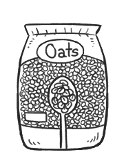

oats
Oats, or Avena sativa, is a species of cereal grain grown for its seed. Oats is sold in many forms, as groats (whole), steel-cut (cut groats), rolled (flattened), crushed (quick oats) or ground into flour. Oats are a source of protein, thiamine, iron, and are a near equivalent in quality to soy protein.
Oats are often boiled and eaten as porridge, but can also be baked into savoury foods and desserts, or made into plant milk.